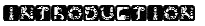
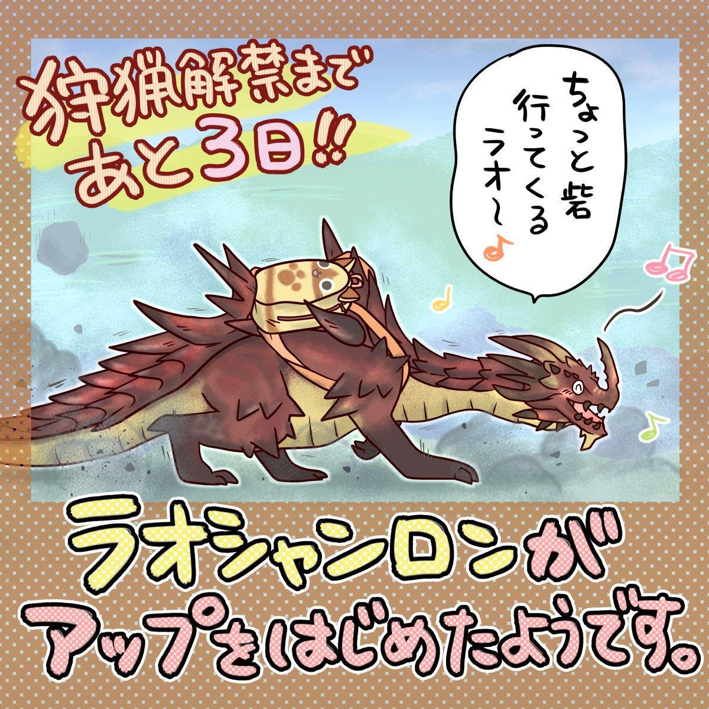

Back to top
Back to topLi Hin Ho

Lao-Shan Lungs' Home Shop is an online home shop owned by CAPCOM which sales a product series of Monster Hunter. This series stressed the point of hunting different monster as a selling point and simplifies the content of story. The characteristics of original destruction of the monster hunter series and four people joining together to crusade the characteristics of a huge monster is a trend, it becomes a consistent style characteristic during the development of game series.
In the game, player playing as a hunter. He can use weapons that larger than himself and accepts a various type of crusade and collects various materials. The game purpose is to use the gained rewards from task, or to collect and give the material of their own to constantly strengthen their own equipment and props, and gradually challenge the task to a challenging difficulty.
It should be noted that the player character does not have a "grade" design, which depends on player's own technical skills. If the players are not good at technology and cannot catch hunting crickets, they will end up failing in the end even if they wear advanced equipment.
The theme of Monster Hunter series is hunting. Corresponding to this theme, there are various kinds of creatures in the game, such as gentle herbivores, huge beetles and many ferocious beasts and dragons, and a variety of natural environments such as woods, deserts, swamps, and snow-capped mountains. Volcano, tree jellyfish and so on.
The game also includes many CG animations of "eco-films" about these giant animals. "Eco-film" uses a similar animal documentary performance. Since the Monster Hunter series has a very unique worldview, it also derived a number of related products such as novels, comics, dolls, models, radio drama CDs and exchangeable card games. The task of the village chief is limited to personal play and is low in difficulty. The purpose is to familiarize the player with the game. The task of the assembly center is to be able to connect many people to play. The difficulty is increased but the reward is relatively abundant.
This series started from the PS2, "Monster Hunter 2" in the PS2 sales of about 630,000 sets, later in the PSP between the connection between the handheld to make this series of sales increased significantly, PSP's "Monster Hunter Portable 2nd G sold a total of 5.5 million units, which was the highest sales volume in the series and also contributed to the sales of the PSP body. Since the release of "Monster Hunter 3G" on 3DS, "Monster Hunter 4G" has sold 3.96 million sets, which is the highest number on the 3DS platform.
The Monster Hunter series is one of Capcom's best-selling series. As of January 2018, this series has sold 45 million units.
